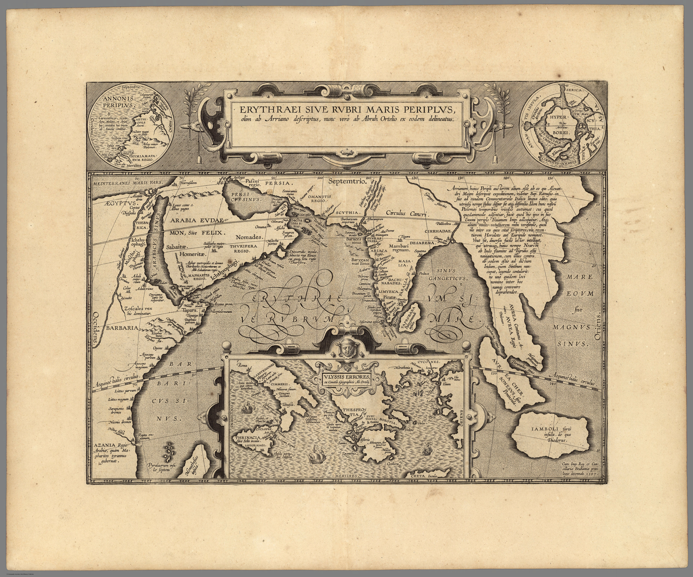

Click to enlargeOrtelius's reconstruction, for the Parergon, of the ancient Periplus of the Erythraean Sea — the Greco-Roman mariner's guide to the Red Sea, Arabian Sea and Indian Ocean trade. It maps India as the eastern terminus of antiquity's maritime world, complete with an inset charting the wanderings of Ulysses.
Authorship and object
A plate from Ortelius's atlas of ancient geography, drawn by him from classical sources after Arrian's account, and here in the 1608 Italian Theatro del Mondo (Pigafetta's translation, published by Vrients). The Parergon maps were Ortelius's own compositions, not reductions of other men's work.
Mapping an ancient text
The map visualises the trade route described in the first-century Periplus, naming the classical emporia of the Red Sea, the Horn of Africa, Arabia and the Indian coast as the ancients knew them. A celebrated inset, Ulyssis Errores, plots the Homeric voyage — antiquity's geography of the sea rendered as cartography.
The gaze
Like the Alexander map, this is India apprehended through the classical past: the subcontinent as the far edge of a Mediterranean trading world, reached by Greek and Roman ships and recorded by Greek and Roman authors. It is a reminder that Europe's mercantile interest in India was understood, from the outset, as the revival of an ancient connection.